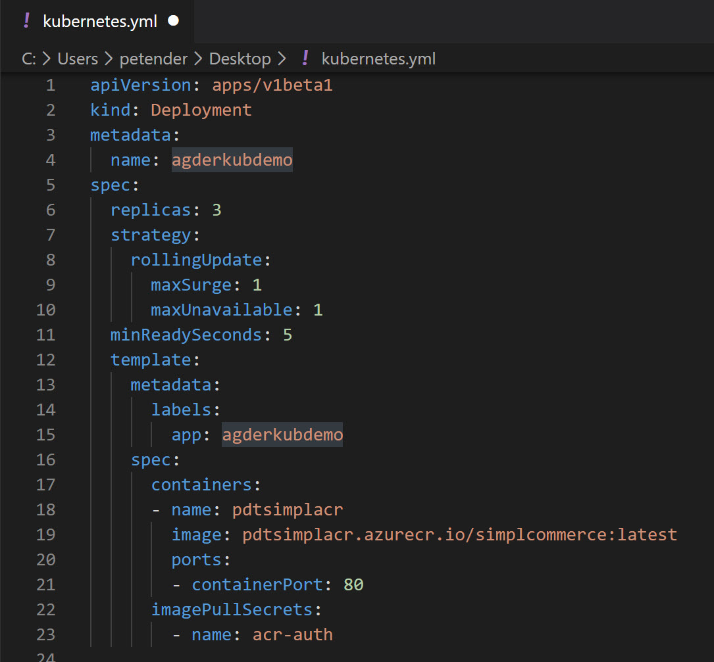
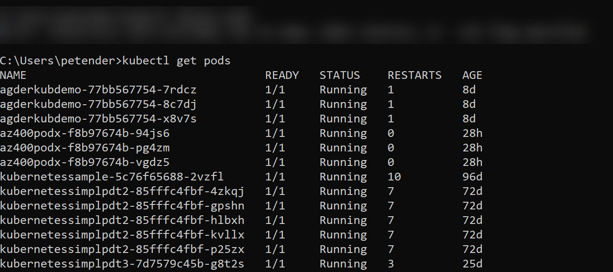
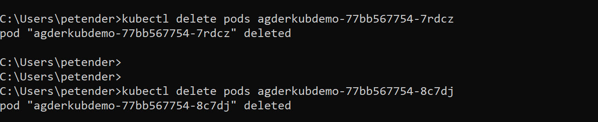
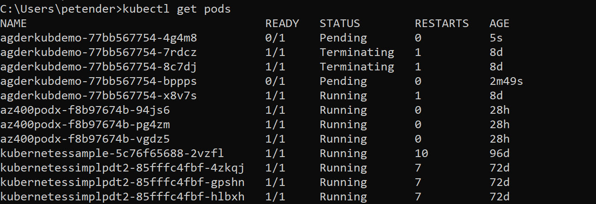
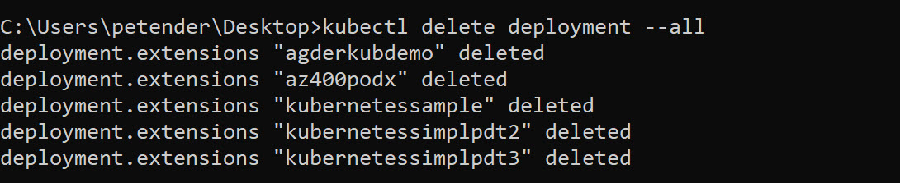
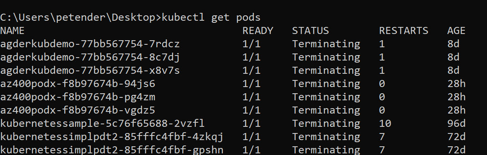

Hi again,
In about every Azure training delivered the last few months, I am talking about Docker and Azure Kubernetes Services - AKS
Along these months, the amount of “sample PODS” I am running within the Kubernetes cluster was continuously growing, resulting in a less efficient demo scenario to show.
So cleaning up these running PODS was my 5 seconds action this Saturday morning. While not super hard, it actually took me a bit longer than 5 seconds (more like 10min :)), since I forgot a few “basics” on how Kubernetes is running PODS.
To safe myself some time in the future, and even more, helping readers from making the same mistake, I took note of it:
The Before Situation
-
I am not discussing how to deploy AKS on Azure, there is already enough documented on how to achieve this using the Azure Portal as well as using Azure CLI to do this.
-
Deploying PODS (=your Docker containerized application) to the Kubernetes cluster is done using a “Kubernetes.YAML” file, having settings on the application name, the amount of container replicas you want to run within the cluster for high availability, and the link to the Azure Container Registry where the container image can be found.
A sample such kubernetes.yml looks like this:

Some important settings in this file are:
metadata / name this is the name of the deployment (important for later…!) (agderkubdemo in my example) template / app this is the name of the application within the AKS cluster (agderkubdemo in my example) containers / name name of the Azure (or other or Public Docker Hub) Container Registry containers / image name of the Azure (or other or Public Docker hub Container Repository (=name of your Docker container image))
Once you have this file, you can run the following command to get the PODS deployed to your AKS cluster:
|
|
So that’s what I currently had, a running AKS server with a couple of tens of these sample app containers running :)
How to delete PODS from AKS
If you want to know what PODS you are actually running on your AKS cluster, run the following command:
|
|
which looks similar to what I have in my environment:

Easy enough, there is a kubectl command to delete PODS, go figure:
|
|
which nicely deletes the identified POD

or did it?

Apparently the PODS were not really getting deleted in the way I wanted them to be completely removed from the cluster. My “active” PODS turned to a state “terminating”, but at the same time, there were 2 new PODS running the same application. What’s going on?
After a few seconds, it struck me what AKS was doing here… The built-in high availability of Kubernetes always tries to make sure it has container instances running, according to… what you defined in your deployment (=the kubernetes.yml file).
Let’s check that file again:
I had my specs / replicas set to “3”, which means Kubernetes runs 3 identical container instances of my application (for high availability). So in reality, when you run the delete action against a replica, AKS just starts up new instances, to comply to the 3 running instances you ask for.
So there must be another way to run the deletion.
One source I found on the internet recommended to set the replica parameter to “0”, but that felt a bit weird to me (although I actually tried and succeeded).
However, the best practice seems to be deleting the actual deployment. Remember I pointed this out earlier, this setting is in the “kubernetes.yml” file as well, saying this setting was important
metadata / name this is the name of the deployment (important for later…!) (agderkubdemo in my example)
Within Kubernetes, when you run a “kubectl apply” action, it remembers this state as a deployment. So by removing this deployment, it will also remove the corresponding PODS. Let’s give that a try:
|
|
Or you could also use parameter “–all” as follows, to delete all previous deployments at once:
|
|

If we know check what happens with the running PODS, they will all be nicely terminated, and eventually getting deleted from the AKS environment:
|
|

Summary
This post described how you can successfully delete running PODS from an AKS environment, using different scenarios.
See you all soon, reach out when you have any questions on AKS or Azure in general,

Cheers, Peter